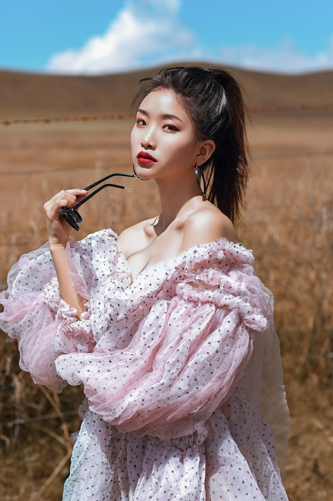

Sensory Psychology Monograph
Textile Acoustics & Tactile Psychology: Sensory Luxury in Modern Attire
Published by VelvetGarbQuay Sensory Research Unit • Reading Time: 15 Minutes • Focus: Enclothed Cognition & Touch

The Multisensory Reality of Haute Couture
In mainstream fashion commentary, garments are almost exclusively analyzed through two-dimensional visual metrics: photographability, silhouette geometry, color trend forecasting, and runway aesthetics. Yet, for the individual inhabiting the garment, the human experience of clothing is profoundly multisensory—anchored in the tactile pressure against the skin, the acoustic whisper of moving silk, the thermal insulation of natural fibers, and the deep psychological phenomenon known as "enclothed cognition."
At VelvetGarbQuay, our master tailors and textile researchers study the intersection of neurological sensory processing and haute couture construction. When you slip into a bespoke silk velvet coat structured with floating horsehair canvas, your nervous system responds immediately to subtle bio-mechanical cues, shifting your posture, vocal resonance, and internal sense of personal sovereignty.
Clothing is our most intimate physical environment—a second skin that interfaces continuously between our biological body and the external social sphere. By engineering garments with deliberate sensory harmony, bespoke tailoring provides not merely aesthetic distinction, but a profound state of emotional grounding and psychological tranquility.
The Neurological Grounding of Heavyweight Silk Velvet
Modern fast fashion has conditioned consumers to accept ultra-lightweight, flimsy synthetic fabrics that float insubstantially around the body. While light weight is often marketed as "convenience," it frequently deprives the neurological system of essential proprioceptive feedback.
In neuroscience, Deep Pressure Stimulation (DPS) refers to the calming effect of uniform, gentle sensory weight applied to the body. When a patron wears our 420g/m² Mulberry silk velvet evening coat, the substantial, balanced mass resting across the clavicles and shoulders stimulates somatic mechanoreceptors.
This gentle tactile grounding signals the parasympathetic nervous system, lowering cortisol levels, steadying heart rate variability, and fostering an aura of serene composure in high-stakes public environments. The physical presence of the garment acts as a somatic anchor, transforming nervous apprehension into calm, deliberate authority.
Textile Acoustics: The Frou-Frou and the Muffled Velvet Hush
Clothing generates a distinct acoustic signature. Synthetic polyester and nylon fabrics produce high-pitched, abrasive scraping noises ("swishing") as limbs move during walking, creating subconscious auditory irritation.
In classical haute couture, the auditory character of luxury is defined by two complementary acoustic phenomena:
- The Muffled Velvet Hush: The millions of microscopic upright silk pile filaments act as organic acoustic baffles, absorbing ambient high-frequency sounds and dampening clothing friction into a soft, velvety hush.
- The Silk Rustle ("Le Frou-Frou"): When pure silk taffeta or Habotai silk linings brush against inner velvet skirts during movement, they produce a subtle, low-frequency acoustic murmur that has signaled regal arrival across French and Venetian salons for centuries.
This acoustic refinement enhances the wearer's sensory environment, eliminating jarring synthetic rustles and surrounding the individual in a quiet cocoon of dignified acoustic privacy.
Enclothed Cognition and Postural Bio-Mechanics
Pioneered by cognitive psychologists Dr. Hajo Adam and Dr. Adam Galinsky, the theory of "enclothed cognition" demonstrates that the clothes we wear systematically influence our psychological processes, abstract reasoning abilities, and interpersonal confidence.
This cognitive shift is deeply intertwined with physical tailoring biomechanics. When a bespoke blazer is built with a pad-stitched canvas and high armholes, the garment gently encourages shoulder retraction, aligns the thoracic spine, and opens the chest. This upright posture naturally expands lung capacity, slows breathing rhythms, and projects non-verbal cues of poise and executive presence before a single word is spoken.
Controlled psychological studies indicate that individuals wearing structured, high-status tailored garments exhibit superior abstract problem-solving capabilities, heightened negotiation stamina, and greater emotional resilience under pressure compared to individuals wearing informal, unstructured attire.
The Tactile Therapy of Natural Protein Fibers
Unlike synthetic polymers that feel cold, clammy, and prone to static cling, natural protein fibers like Mulberry silk and camelhair maintain a natural thermal equilibrium with human skin. Silk fibroin contains eighteen natural amino acids that mirror the pH and protein structure of the human epidermis, preventing friction irritation and providing a soothing, hypoallergenic tactile embrace.
To inhabit a bespoke velvet garment from VelvetGarbQuay is to experience the complete harmony of art, science, and sensory comfort. It is not merely an outfit; it is an intimate sanctuary of craftsmanship that empowers the soul while honoring the sacred dignity of human touch.
In an increasingly digital, disembodied world, the tangible presence of handcrafted luxury reminds us of the profound beauty of physical materials shaped with patience, love, and master human skill.
The Neurobiology of Somatosensory Comfort and Postural Alignment
Human skin is our largest sensory organ, densely populated with specialized tactile mechanoreceptors, including Merkel nerve endings (sensitive to sustained light pressure and texture), Meissner's corpuscles (detecting low-frequency micro-friction), and Ruffini endings (registering skin stretch and warmth).
When you wear an ill-fitting, synthetic mass-market garment, stiff synthetic seams and static-laden polyester fabrics generate constant, low-grade tactile irritation. While the conscious mind may ignore this background noise, the subconscious nervous system registers continuous stress signals, leading to subtle physical fidgeting, postural slouching, and elevated baseline tension.
In contrast, a bespoke garment crafted from pure organic Mulberry silk velvet and lined with smooth Habotai silk produces a soothing somatosensory environment. The natural protein filaments glide across the skin with zero static friction, stimulating somatic mechanoreceptors in a gentle, uniform rhythm that calms the central nervous system and promotes effortless postural poise.
Sartorial Authority and Non-Verbal Communication
Anthropological and sociological research demonstrates that human beings form subconscious judgments regarding competence, trustworthiness, and authority within the first seven seconds of a visual encounter.
A bespoke garment structured with floating horsehair canvas communicates structural integrity before words are exchanged. The crisp, roped shoulder line frames the face; the waist suppression emphasizes kinetic balance; the deep, light-absorbing velvet pile commands quiet attention without loud logos or gaudy embellishments.
This is the essence of understated luxury: commanding an entire room not through aggressive volume, but through the serene, undeniable power of immaculate tailoring and uncompromising material purity.
The Sacred Dignity of Wearable Art
Ultimately, haute couture is a profound celebration of the human spirit. It honors the skilled hands of sericulture farmers, master weavers, pattern cutters, and hand-finishers who pour their life's devotion into creating wearable masterpieces.
When you inhabit a bespoke creation from VelvetGarbQuay, you become part of a living artistic lineage—an ambassador of beauty, craftsmanship, and sensory refinement in an increasingly mechanized world.
Sensory Integration and Executive Cognitive Performance
Modern neuro-ergonomic research indicates that sensory integration in apparel directly impacts executive cognitive load and emotional self-regulation. When an individual wears clothes that pinch, pull, generate synthetic static, or slip out of alignment, the brain constantly allocates subconscious cognitive bandwidth to somatic error-correction.
A bespoke garment engineered to your individual 32-point anatomical profile eliminates this subconscious friction. The high armholes permit natural gesture; the pad-stitched canvas supports the chest; the breathable Mulberry silk pile maintains optimal thermal equilibrium across fluctuating room temperatures.
Free from physical distraction, the mind operates at peak clarity, allowing patrons to engage in critical negotiations, formal keynote presentations, and gala diplomacy with serene, undivided focus. This profound synthesis of tactile luxury and cognitive empowerment is the true triumph of bespoke haute couture.
The Neurological Feedback of Bespoke Weight Distribution
When a garment is custom-tailored to the biological contours of the human skeleton, its physical mass is distributed evenly across the acromioclavicular joints and the thoracic spine. Unlike ill-fitting mass-market clothing that pulls backward at the throat or drags downward at the front hem, a balanced bespoke coat feels almost weightless in kinetic motion while providing reassuring tactile presence.
This biomechanical equilibrium reduces subconscious muscular fatigue across the trapezius and levator scapulae muscles, allowing the patron to maintain an effortless, upright posture throughout long evening galas and diplomatic receptions. The harmony of physical weightlessness and tactile grounding represents the true pinnacle of sensory couture engineering.
The Timeless Sanctuary of Haute Couture
In a world increasingly dominated by digital screens, virtual avatars, and synthetic fast fashion, the tactile presence of genuine silk velvet and hand-tailored floating canvas provides a vital sensory sanctuary. It grounds the human nervous system, reconnects our consciousness with the organic wisdom of nature, and elevates the simple daily act of dressing into an art form of quiet majesty.
At VelvetGarbQuay, we remain dedicated to preserving this sacred sensory heritage. We invite you to experience the transformative power of bespoke tailoring—where art, science, and human touch unite to create garments that endure across generations.
The Harmonious Future of Tactile Fashion Engineering
As neuroscience and textile physics continue to converge, haute couture tailoring is increasingly recognized as a sophisticated discipline of sensory design. By engineering garments with deliberate acoustic dampening, uniform weight distribution, and pure organic silk filaments, bespoke artisans create wearable environments that nurture mental equilibrium and project effortless physical poise.